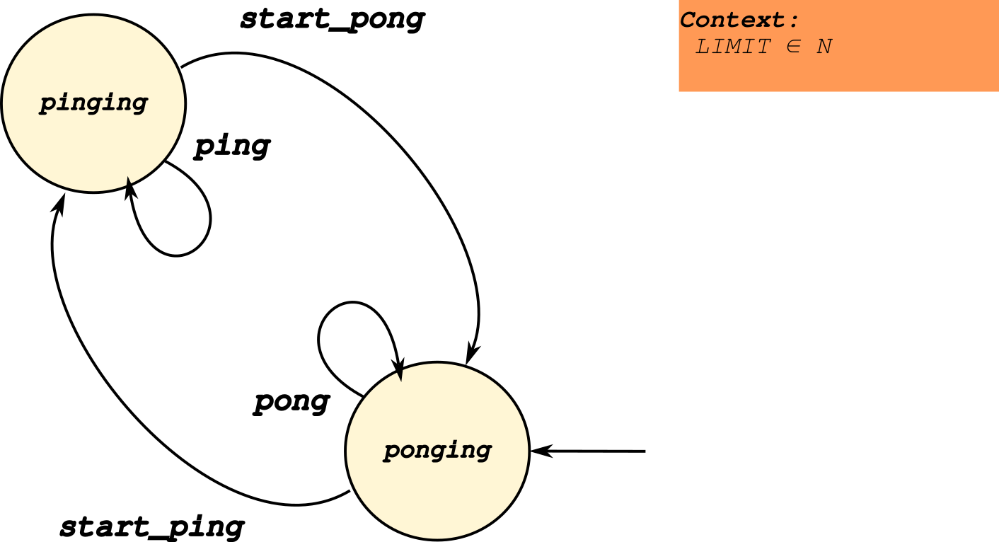
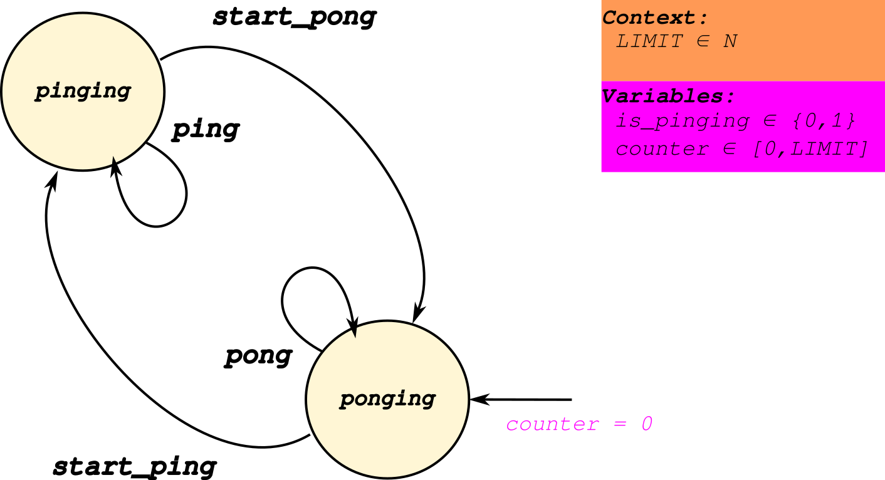
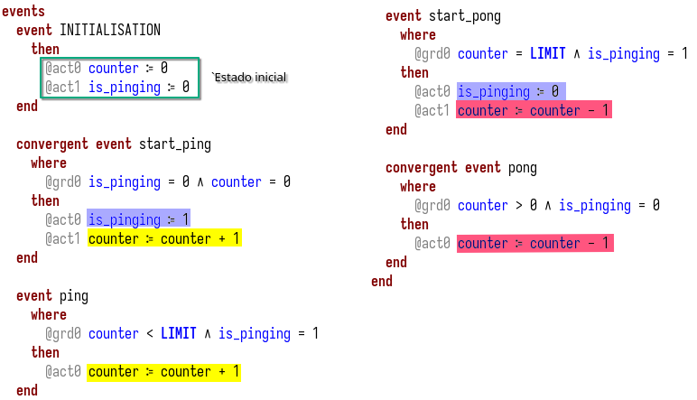
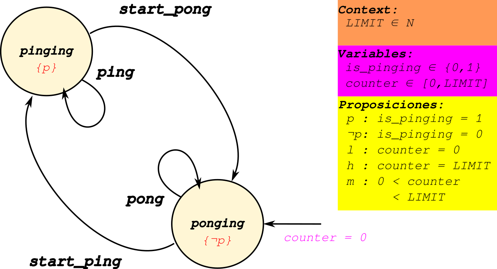
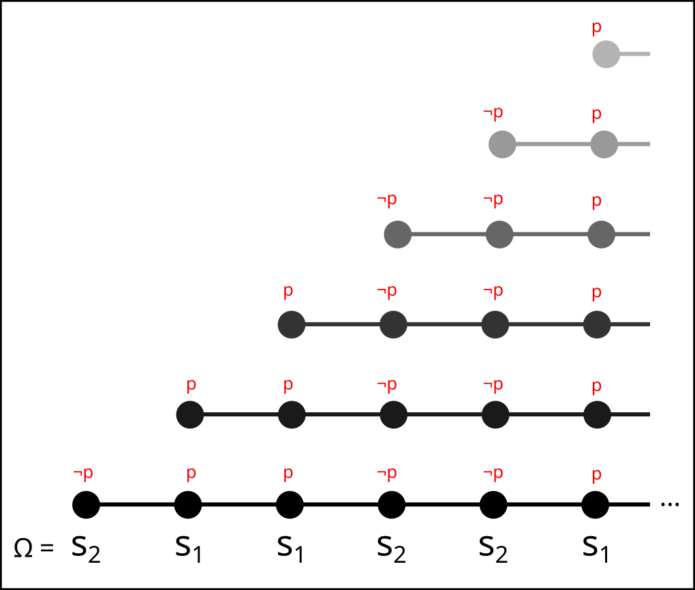
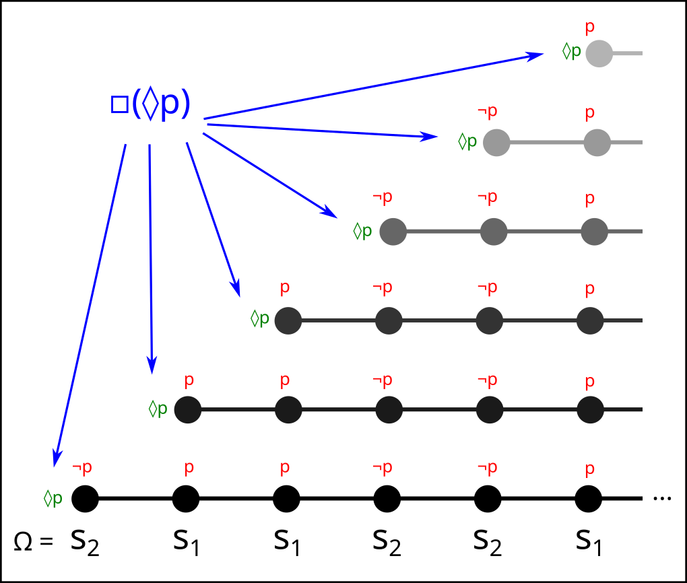

Modelando propiedades de liveness en Event-B
Ramiro Garay
Octubre, 2025
Antes de empezar…
Sobre mí
- Argentino, ex-estudiante de Ingeniería en Informática de la UNL, Santa Fe (2017-2022)
- Desarrollador a medio tiempo para MLabs, una consultora especializada en Blockchain (2022-)
- Estudiante avanzado de Licenciatura en Computación (2025-)
- Actualmente becario PREXI en el LINS
Agenda
- Introducción a propiedades de liveness
- Introducción al modelo
PingPong - Formalizacion de una propiedad de liveness
- Verificación de propiedades de liveness usando model checking
Propiedades de Liveness (Intro)
Una definición informal
“Son aquellas propiedades que nos garantizan que el sistema eventualmente va a hacer algo”
Son fundamentales, ya que permiten representar ciertos comportamientos dinámicos del sistema.
Ejemplo: ascensor (I)
Un ascensor debe cumplir propiedades de safety. Por ejemplo:
- El ascensor nunca se mueve con la puerta abierta
- El ascensor nunca cierra la puerta cuando un usuario es detectado en el umbral
Ejemplo: ascensor (II)
Pero también de liveness!
- Si el usuario pide el ascensor, eventualmente el mismo viaja hacia el piso del usuario.
- Si el usuario seleccionó un piso, eventualmente el ascensor va a llegar al piso pedido.
Ejemplo: ascensor (III)
Un ascensor sin propiedades de liveness puede ser muy seguro, pero también inútil.
Ejemplo: Un ascensor que se mantiene cerrado e inmóvil satisface todas las propiedades de safety pero ninguna de liveness.
“Completitud” de propiedades de safety y liveness
Usando propiedades de safety y liveness, uno puede especificar completamente un sistema. 1
O al revés: toda propiedad es de safety, liveness o una combinación de ambas.
Ejemplos de propiedades de liveness
- Starvation freedom: un proceso hace progreso infinitamente seguido
- Termination: el proceso finaliza
- Guaranteed service: cada solicitud es satisfecha eventualmente
Introducción al modelo PingPong
Introducción
Ahora introducimos un modelo pequeño y sencillo para identificar algunas propiedades de liveness y luego estudiarlas.
Este modelo oscila entre sólo dos estados, como en un partido de ping-pong, de ahí su nombre.

Algunas propiedades del modelo
- Su ejecución no termina en ningún momento
- Su estado inicial es
ponging - Está parametrizado por la constante
LIMIT - El modelo hace
ping(opong)LIMITveces y luego alterna.- (esto último se hace por medio de guardas y variables)
Especificación en Event-B (variables)

Especificación en Event-B (pre- y post-condiciones)

Identificamos una propiedad de liveness
Ahora que entendemos el modelo en detalle, observamos una propiedad interesante:
“Siempre ocurre que, eventualmente, el modelo se encuentra en el estado
pinging”
Intuitivamente, esto es cierto porque el modelo
siempre oscila entre dos estados, de los cuales uno es
el estado pinging.
Esta es una propiedad de existencia. Las siguientes preguntas son:
- ¿cómo formalizamos esta propiedad?
- ¿cómo demostramos esta propiedad para nuestro modelo? (spoiler: con esfuerzo!)
- ¿cómo verificamos esta propiedad?
Hacia una definición formal de existencia
Introducción a LTL
Para definir formalmente una propiedad de liveness es necesario hablar de tiempo.
Para este fin usamos lógica formal.
La Lógica Temporal Lineal (LTL) es una extensión de la lógica de 1er orden que incluye operadores temporales.
Los operadores temporales de LTL nos permiten expresar cosas como siempre, después, eventualmente, etc.
Al igual que la lógica de 1er orden, la LTL se puede analizar desde dos puntos de vista:
- La sintaxis (cómo se construyen las fórmulas lógicas)
- La semántica (cuándo se satisfacen las fórmulas)
Empezamos por la semántica.
Estructura de Kripke del modelo PingPong
La semántica de LTL requiere de una estructura auxiliar llamada estructura de Kripke.
La estructura de Kripke se obtiene de agregar fórmulas lógicas a una máquina de estado.
Veamos una estructura de Kripke para el modelo
PingPong.

⇒ Definimos un conjunto de proposiciones y en base a ellas definimos los estados de la máquina.
Traza de una máquina
Con la estructura de Kripke, podemos empezar a analizar si ciertas fórmulas LTL son verdaderas o no.
Se dice que una fórmula es válida si todas las trazas de la estructura de Kripke satisfacen la fórmula.
⇒ Una traza es una sucesión (posiblemente infinita!) de estados. Estos se obtienen de ejecutar la máquina respetando las restricciones.
Traza del modelo PingPong (LIMIT = 2)
Para cada valor de LIMIT, el modelo PingPong tiene una
única traza posible. Por ejemplo:
- Ω = s2, s1, s1, s2, s2, s1, ...
Asociado a cada estado de la traza, se encuentra el conjunto de proposiciones que son verdaderas para ese estado:
- w = {¬p, l}, {p, m}, {p, h}, {¬p, m}, ...
(Esta sucesión se llama palabra)
Formulando existencia
Para formular nuestra propiedad de existencia, necesitamos dos operadores temporales.
- Siempre (▫)
- Eventualmente (◊)
Con estos dos, podemos formular la propiedad que deseamos:
“Siempre ocurre que, eventualmente, el modelo se encuentra en el estado
pinging”
En LTL:
▫(◊p)
Verificando la válidez de la fórmula (a mano)
Anteriormente calculamos la traza para LIMIT = 2:
- Ω = s2, s1, s1, s2, s2, s1, ...
y su correpondiente palabra:
- w = {¬p, l}, {p, m}, {p, h}, {¬p, m}, ...
¿Cómo podemos validar que la traza satisface la fórmula:
▫(◊p)
?
Porque:
- ▫p: se satisface si p es satisfecho por todas las subtrazas.
- ◊p: se satisface si p es satisfecho por alguna subtraza.
- p: se satisface si el primer elemento de la traza satisface p



Otras fórmulas
El modelo también satisface otras fórmulas LTL:
- ▫(l ⟹ ◊h) (progreso de l a h)
- ▫(h ⟹ ◊l) (progreso de h a l)
Si incluimos un estado final (modelo PingPongEnd).
- ◊(▫f)) (persistencia)
Pero no nos detendremos analizarlas.
Observaciones
Todas las propiedades de liveness se pueden expresar usando fórmulas LTL
Si una propiedad de liveness no se cumple, siempre debe existir una traza que sirva de contraejemplo.
Demostración de existencia
Posibilidades y limitaciones de Event-B
Es posible demostrar varias propiedades de liveness utilizando Event-B 2
Sin embargo, esto se debe hacer por medio de lemas auxiliares. No se puede hablar directamente de las trazas de una máquina, lo cual complica mucho su expresión.
Existencia de P (demostración)
Por medio de dos propiedades auxiliares 3:
- Convergencia en ¬P
- ¬P es libre de deadlocks
Intuición:
- ¬P debe transicionar a otro estado eventualmente, sino P sería imposible.
- ¬P debe ser deadlock-free, o de otra forma sería imposible que P sea cierto.
La demostración de existencia del estado pinging está
hecha para el modelo PingPong, pero la omitimos por cuestiones de tiempo
:) .
Verificación en ProB
Model checking al rescate
Vimos que es posible verificar propiedades de existencia triviales a mano.
Y también es posible demostrarlas en Event-B, aunque con bastante esfuerzo.
El model checking nos ayuda a verificar modelos de mayor tamaño
“Model check” (I)
Esta funcionalidad explora lo máximo posible el espacio de estados del modelo para encontrar violaciones de invariantes/teoremas y deadlocks.
Es útil para verificar que el modelo cumple con las variantes antes de demostrarlo.
“Model check” (II)
Hay dos casos donde el model check no es exhaustivo:
- No se exploró el espacio de estados completo
- No se exploraron todos los eventos posibles
Ambos se pueden remediar aumentando los valores de las constantes
MAX_INITIALIZATIONS y MAX_OPERATIONS y
acotando las constantes del modelo (fundamental).
“Model check” (III)
El model checking nos permite sólo verificar, no demostrar.
En el mejor de los casos (cuando el chequeo es exhaustivo), nos permite demostrar las propiedades deseadas en un modelo más pequeño que el “real”.
LTL checking (I)
Esta funcionalidad nos permite escribir fórmulas LTL que son verificadas por ProB.
ProB soporta todos los operadores temporales e incluso algunos operadores específicos a B/Event-B que facilitan la escritura de propiedades útiles.
LTL checking (II)
Las propiedades de liveness se pueden escribir del siguiente modo:
G F ({is_pinging = 1}))
G F ({is_pinging = 0}))
F G ({runs_counter = RUNS_LIMIT})
G (e(ping) => F (e(pong)))Donde e(<evento>) es la guarda del evento en
cuestión (i.e: el evento está activado).
Bibliografía
Bibliografía
B. Alpern y F. B. Schneider, «Defining liveness», Information Processing Letters, vol. 21, n.º 4, pp. 181-185, oct. 1985, doi: 10.1016/0020-0190(85)90056-0.↩︎
T. S. Hoang y J.-R. Abrial, «Reasoning about Liveness Properties in Event-B», en Formal Methods and Software Engineering, vol. 6991, S. Qin y Z. Qiu, Eds., en Lecture Notes in Computer Science, vol. 6991. , Berlin, Heidelberg: Springer Berlin Heidelberg, 2011, pp. 456-471. doi: 10.1007/978-3-642-24559-6_31.↩︎
T. S. Hoang y J.-R. Abrial, «Reasoning about Liveness Properties in Event-B», en Formal Methods and Software Engineering, vol. 6991, S. Qin y Z. Qiu, Eds., en Lecture Notes in Computer Science, vol. 6991. , Berlin, Heidelberg: Springer Berlin Heidelberg, 2011, pp. 456-471. doi: 10.1007/978-3-642-24559-6_31.↩︎